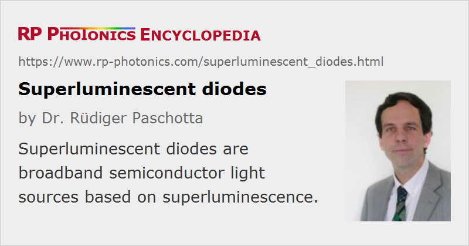

Superluminescent Diodes
Acronym: SLD or SLED
Definition: broadband semiconductor light sources based on superluminescence
Alternative terms: superluminescence diodes, superluminescent LEDs
More general term: superluminescent sources
German: superlumineszente Dioden
Categories: photonic devices, optoelectronics, non-laser light sources
How to cite the article; suggest additional literature
Author: Dr. Rüdiger Paschotta
Superluminescent diodes (also sometimes called superluminescence diodes or superluminescent light-emitting diodes = superluminescent LEDs) are optoelectronic semiconductor devices which emit broadband optical radiation based on superluminescence. In terms of construction, they are similar to laser diodes, containing an electrically driven p–n junction and an optical waveguide. Importantly, however, SLDs lack optical feedback by reflections, so that no laser action can occur. Parasitic optical feedback from the facets, which could lead to the formation of resonator modes and thus to pronounced structures in the optical spectrum and/or to spectral narrowing, is suppressed by means of tilting the facets relative to the waveguide, and can be suppressed further with anti-reflection coatings. Essentially, an SLD is a semiconductor optical amplifier with no input signal, where weak spontaneous emission into the waveguide mode is followed by strong laser amplification (→ amplified spontaneous emission).
A frequently used acronym for the superluminescent diode is SLD. The alternative acronym SLED is also used for surface-emitting LED, i.e., with a totally different meaning, so that confusion can arise.
Wavelength, Power, and Optical Bandwidth
Most superluminescent diodes emit in one of the wavelength regions around 800 nm, 1300 nm, and 1550 nm. However, devices for other wavelengths are available, also in the visible domain.
Typical output powers are in the range from a few milliwatts to some tens of milliwatts, and spatially the emission is close to diffraction-limited, i.e., the spatial coherence and beam quality are very high. Therefore, the broadband output can be easily launched into a single-mode fiber. Fiber-coupled SLDs are in fact most common.
The optical bandwidth of an SLD is usually some tens of nanometers, sometimes even above 100 nm. This corresponds to a coherence length of a few tens of microns, sometimes even only a few microns. Due to gain narrowing, there is a trade-off between high output power and broad bandwidth, which can however be improved with various methods. This trade-off, and not the lack of optical feedback, is the main reason why SLDs deliver lower optical powers than laser diodes.
Another factor, which is important for some applications, is wavelength stability, particularly under conditions of variable temperatures and aging. Typically, the center wavelength drifts by some fraction of a nanometer per Kelvin temperature change, following the drift of the semiconductor's gain spectrum.
Various Technical Issues
SLDs should be carefully protected against external optical feedback. Even small levels of feedback can reduce the overall emission bandwidth and the output power, or sometimes even lead to parasitic lasing, causing narrow spikes in the emission spectrum. Some devices may even be damaged by optical feedback. Note that the Fresnel reflection from a perpendicularly cleaved fiber end is already well above the level of feedback which can be tolerated.
To a similar extent as laser diodes, SLDs are sensitive to electrostatic discharges and current spikes e.g. from ill-designed driver electronics. However, when treated carefully and operated well within the specifications, SLDs can easily last for tens of thousands of hours of operation.
Applications
SLDs are applied in situations where a smooth and broadband optical spectrum (i.e. low temporal coherence), combined with high spatial coherence and relatively high intensity, is required. Some examples are:
- Optical coherence tomography (OCT), e.g. for cornea and retina diagnostics, for cardiovascular imaging, for other biomedical purposes or for biology research, requires a broad bandwidth for a high spatial resolution of the images, and a sufficiently high optical power for fast image acquisition with good signal-to-noise ratio.
- The chromatic dispersion of fibers and other optical components is often measured with techniques which require some broadband light source (see also: white light sources). An example is white light interferometry.
- Broadband light can be used for testing of optoelectronic components, e.g. in terms of transmission or reflection spectra, amplification factors, dispersion, and the like. This is used e.g. for diagnosing problems in fiber-optic links by measuring chromatic dispersion or polarization mode dispersion. For such purposes, devices emitting around 1.3 μm or 1.5 μm are usually applied.
- Some types of fiber-optic sensors, e.g. for measuring temperature, strain or pressure in buildings, oil pipelines or oil fields, are interrogated with broadband light sources. High output powers can be beneficial, as they allow the interrogation of multiple sensors over long distances of optical fiber.
- Fiber-optic gyroscopes, as used e.g. for navigation of large airplanes, benefit from a broadband light source. The Sagnac phase shift associated with a rotation can in principle also be measured with a ring laser. However, a broadband source allows one to implement a principle of operation which does not suffer from a phase locking phenomenon at low rotation rates, despite some scattering in the single-mode fiber. Further, the setup is fairly simple and robust and does not contain particularly expensive parts. However, wavelength stability of the source is an issue which has to be carefully observed.
Possible Alternatives
For higher output powers, an SLD may be replaced with an unseeded fiber amplifier. However, fiber-based sources are substantially more expensive.
In cases where very low optical powers are sufficient, a simple bulb may be used. However, the brightness of a bulb is orders of magnitude smaller than that of an SLD, so the difference in, e.g., signal-to-noise ratio or speed of some measurement can be huge.
In principle, an SLD is a semiconductor optical amplifier (SOA) with no input signal, but it is optimized for a good combination of output power and bandwidth, and therefore better suited for broadband light generation than an all-purpose SOA.
Suppliers
The RP Photonics Buyer's Guide contains 20 suppliers for superluminescent diodes. Among them:
Questions and Comments from Users
Here you can submit questions and comments. As far as they get accepted by the author, they will appear above this paragraph together with the author’s answer. The author will decide on acceptance based on certain criteria. Essentially, the issue must be of sufficiently broad interest.
Please do not enter personal data here; we would otherwise delete it soon. (See also our privacy declaration.) If you wish to receive personal feedback or consultancy from the author, please contact him e.g. via e-mail.
By submitting the information, you give your consent to the potential publication of your inputs on our website according to our rules. (If you later retract your consent, we will delete those inputs.) As your inputs are first reviewed by the author, they may be published with some delay.
Bibliography
| [1] | M. C. Amann and J. Boeck, “High efficiency superluminescent diodes for optical-fibre transmission”, Electron. Lett. 15, 41 (1979), doi:10.1049/el:19790029 |
| [2] | G. A. Alphonse et al., “High-power superluminescent diodes”, IEEE J. Quantum Electron. 24 (12), 2454 (1988), doi:10.1109/3.14376 |
| [3] | C. Holtmann et al., “High power superluminescent diodes for 1.3 μm wavelengths”, Electron. Lett. 32 (18), 1705 (1996), doi:10.1049/el:19961117 |
| [4] | V. R. Shidlovski and J. Wei, “Superluminescent diodes for optical coherence tomography”, Proc. SPIE 4648, 139 (2002), doi:10.1117/12.462650 |
| [5] | E. V. Andreeva et al., “Superluminescent InAs/AlGaAs/GaAs quantum dot heterostructure diodes emitting in the 1100–1230-nm spectral range”, Quantum Electron. 36 (6), 527 (2006), doi:10.1070/QE2006v036n06ABEH013229 |
| [6] | C.-F. Lin and B.-L. Lee, “Extremely broadband AlGaAs/GaAs superluminescent diodes”, Appl. Phys. Lett. 71 (12), 1598 (1997), doi:10.1063/1.119844 |
| [7] | Z. Q. Li and Z. M. Simon Li, “Comprehensive modeling of superluminescent light-emitting diodes”, IEEE J. Quantum Electron. 46 (4), 454 (2010), doi:10.1109/JQE.2009.2032426 |
| [8] | A. Kafar et al., “High-optical-power InGaN superluminescent diodes with 'j-shape' waveguide”, Appl. Phys. Expr. 6, 092102 (2013) |
See also: superluminescent sources, superluminescence, white light sources, white light interferometers, optical coherence tomography
and other articles in the categories photonic devices, optoelectronics, non-laser light sources
|  |
If you like this page, please share the link with your friends and colleagues, e.g. via social media:
These sharing buttons are implemented in a privacy-friendly way!